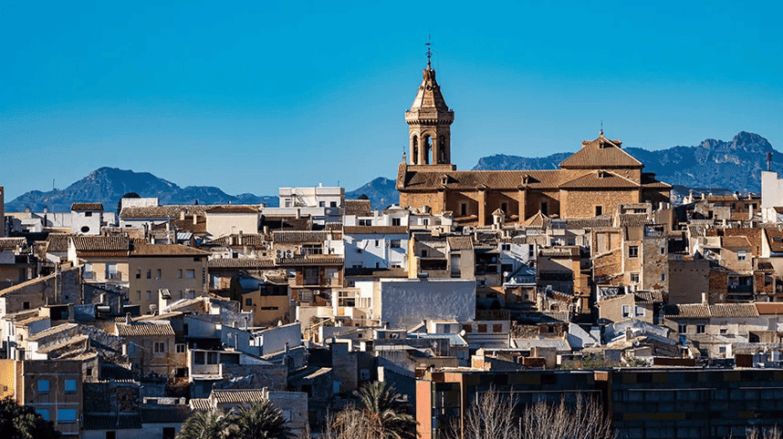
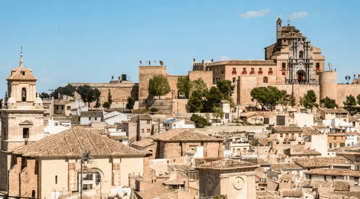

El sol luce más de 3.000 horas al año y a su costa la bañan dos mares de aguas cálidas. De hecho, su litoral es conocido como la Costa Cálida y en ella encontrarás largas playas y pequeñas calas con múltiples propuestas de ocio, deporte y bienestar.
Una de las zonas más atractivas es La Manga del Mar Menor, un destino en el que relajarse disfrutando del mar y de las actividades de su Estación Náutica. Además, hallarás playas extensas y blancas como las de San Pedro del Pinatar; calas medio salvajes como las de Cartagena, paisajes curiosos como las erosiones de Mazarrón o localidades pesqueras como Águilas.

Caravaca de la Cruz
Al noroeste de la provincia de Murcia se emplaza la localidad de Caravaca de la Cruz. Entre su caserío, que se extiende en torno a un castillo, se encuentran bellas muestras del Renacimiento murciano.
La zona en la que se asienta Caravaca ya estuvo habitada por las culturas argárica, íbera y romana, pero los orígenes de su estructura urbana hay que buscarlos durante la dominación árabe. Tras la Reconquista, estos territorios pasaron a ser gobernados por la Orden del Temple y más tarde por la de Santiago. En esta época, durante los siglos XVI y XVII, Caravaca vivió su máximo esplendor ya que se convierte en el centro político de un vasto territorio. Así, esta población nos muestra un numeroso catálogo monumental fruto de su importancia histórica.

La Unión
SLa industria minera es protagonista del paisaje singular de La Unión. En Murcia, al sureste de España, entre las playas del Mar Menor y el Mar Mediterráneo, se encuentra La Unión. La minería está muy ligada al pasado y el presente de esta ciudad. Ésta fue durante mucho tiempo su principal actividad industrial.
Hoy puede acercarse a ella visitando el Liceo de los Obreros, construido en 1901 y convertido en Museo Minero, y el Parque Minero de La Unión, con 50.000 metros cuadrados y donde podrá visitar una antigua mina subterránea y montar en un tren minero.Conozca también su patrimonio histórico a través de lugares como la Casa del Piñón o el Antiguo Mercado Público, y contemple la arquitectura tradicional de edificaciones como La Cooperativa.